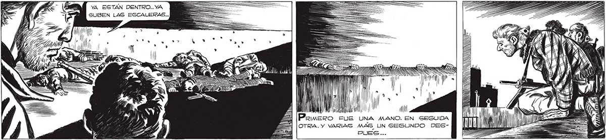
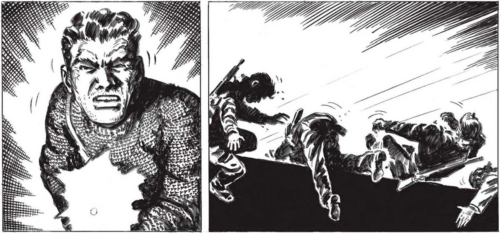
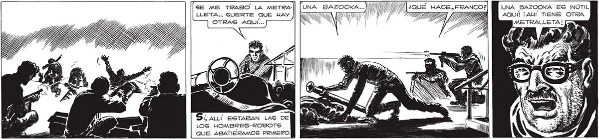

YA EGTAN DENTRO... YA SUBEN LAS ESCALERAS... de A rr — E IN mp" Úm A | ' ' IN, lll LA ' a Ll la FUE UNA MANO. EN SEGUIDA OTRA. Y VARIAS MAS UN SEGUNDO DES¿LISTO, JUAN ? AHÚ GUBEN MAS... Que venorían Y VENDRÍAN, A DESPECHO DE LAS BAJAS, HASTA QUE NO TUVIÉRAMOS MAS PROYECTILEG EN LOS CARGADORES... SE ME TRABO LA METRA-|| [UNA BAZOOKA. AN NW W ) | - a 2 ¡UNA BAZOOKA ES INÚTIL LLETA... GUERTE QUE WAY SN VW Po AQUÍ! ¡AHI TIENE OTRA OTRAS AQUÍ... D METRALLETA! ad, SS astas S: ALL ESTABAN LAS DE LOS HOMBRES-ROBOTS QUE ABATIERAMOS PRIMERO.


